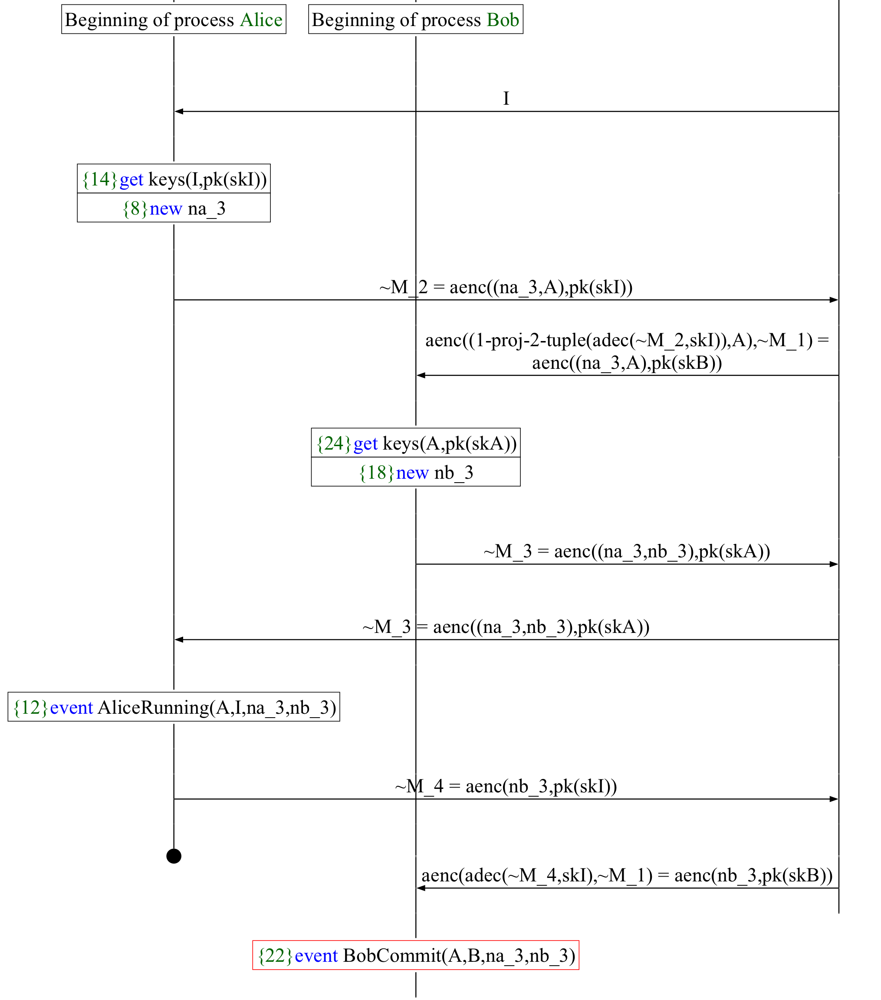

Лекція
Формальна верифікація криптографічних протоколів
ProVerif і Tamarin: як описати протокол моделлю, сформулювати властивості безпеки й знайти атаку
Добрий день. Сьогодні говоримо про те, як перевіряють криптографічні протоколи не тестами, а математично: будують модель протоколу й модель зловмисника і просять програму або довести, що властивість безпеки виконується в усіх можливих сценаріях, або показати конкретну атаку. Ми розглянемо два найпоширеніші інструменти, ProVerif і Tamarin, на одному класичному прикладі, а потім перейдемо до вебпротоколів, з якими ви працюватимете на практичних: токенів JWT і OAuth 2.0. План такий: спершу навіщо це потрібно, потім символьна модель і як записати властивості секретності й автентифікації, далі обидва інструменти, після цього методика пошуку вад і що буде на практичних роботах. Наприкінці кожен має розуміти, як прочитати трасу атаки, яку видав інструмент, і пояснити її людською мовою.
Протоколи ламаються логікою, а не шифром
1978 → 1995
Нідгем–Шредер
17 років протокол вважали надійним. Лоу знайшов атаку посередині, перевіряючи модель автоматично.
2016 → 2025
OAuth 2.0
Формальний аналіз знайшов атаки mix-up і 307 redirect. Захисти від них увійшли в RFC 9700 (2025).
2023
EDHOC для IoT
Аналіз у ProVerif і Tamarin знайшов слабкості чернетки стандарту IETF; виправлення внесли до затвердження.
Шифри в усіх трьох випадках не зламано. Тести цих атак не знаходили: їх просто ніхто не уявив.
Почнімо з трьох історій. Протокол Нідгема–Шредера з відкритим ключем опубліковано 1978 року, це був хрестоматійний протокол взаємної автентифікації. 1995 року Гевін Лоу опублікував атаку на нього: зловмисник, з яким Аліса чесно почала сесію, видає себе за Алісу перед Бобом. Наступного року Лоу показав, як цю атаку автоматично знаходить перевірник моделей FDR, і запропонував виправлення. Сімнадцять років атаки ніхто не помічав. Друга історія: 2016 року Фетт, Кюстерс і Шмітц формально проаналізували OAuth 2.0 і знайшли нові атаки, зокрема mix-up і атаку через перенаправлення 307; захисти від них записані в RFC 9700, який вийшов 2025 року. Третя, зовсім свіжа і близька до радіозв’язку: EDHOC, протокол обміну ключами IETF для обмежених IoT пристроїв. 2023 року група з Inria проаналізувала його чернетку в ProVerif і Tamarin і знайшла слабкості за розширених моделей загроз; робоча група прийняла виправлення в наступну версію чернетки, тобто ще до затвердження стандарту. Спільне в усіх трьох: шифр ніхто не ламав. Помилка в логіці обміну повідомленнями, у тому, що саме перевіряє кожна сторона. І тести такі помилки не ловлять, бо тест перевіряє сценарій, який хтось придумав, а атака — це сценарій, якого ніхто не придумав.
Що таке формальна верифікація протоколу
Протокол
RFC, специфікація, код
Модель
процеси або правила, зловмисник
Властивість
секретність, автентифікація
Інструмент
ProVerif, Tamarin
Доведено
для будь-якої кількості сесій і будь-якої поведінки зловмисника в межах моделі
Атака
конкретна траса: хто, кому, що надіслав і як зловмисник досяг мети
Невідомо
пошук не завершився або «cannot be proved»: модель треба спрощувати чи допомагати інструменту
Що ж таке формальна верифікація протоколу. Ми беремо протокол у тому вигляді, в якому він описаний у стандарті чи реалізований у коді, і будуємо модель: які учасники, які повідомлення, які перевірки робить кожен учасник і що вміє зловмисник. Потім формулюємо властивість, наприклад «пароль ніколи не стає відомим зловмиснику» або «сервер приймає токен, лише якщо його видав сервер ідентичності». Модель і властивість подаємо інструменту. Відповідей буває три. Перша: доведено, причому для необмеженої кількості паралельних сесій і для будь-якої поведінки зловмисника, яку дозволяє модель. Тестами такого не отримати в принципі. Друга: атака, і тоді інструмент дає трасу, тобто покроковий сценарій. Третя, про яку чесно треба сказати: інструмент може не завершитися або відповісти, що не може ні довести, ні спростувати. Тоді модель спрощують або дають інструменту підказки, про це поговоримо окремо. Зверніть увагу на слова «в межах моделі»: доведення стосується моделі, а не коду. Якщо модель неточна, доведення нічого не гарантує про реальну систему.
Символьна модель: повідомлення як терми
Терми. Повідомлення будують функціями: aenc((na, A), pkB) , а не бітами.
Конструктори й деструктори. Розібрати терм можна лише за правилом: розшифрувати без закритого ключа неможливо.
Рівняння. Алгебра примітиву, наприклад комутативність Діффі–Геллмана.
Ідеальна криптографія. Без ключа зловмисник не дізнається нічого: ні частини, ні «майже».
(* ProVerif *)
fun aenc(bitstring, pkey): bitstring.
Основа обох інструментів — символьна модель криптографії, її ще називають моделлю Долєва–Яо. Повідомлення в ній не є рядками бітів, це терми, тобто вирази, побудовані з функцій. Шифротекст — це терм aenc від повідомлення і відкритого ключа. Функції бувають двох видів. Конструктори будують терми: шифрування, підпис, хеш, кортеж. Деструктори розбирають їх, і лише за явно записаним правилом. Праворуч бачите правило ProVerif: adec від aenc(m, pk(k)) з ключем k дає m. Жодного іншого способу дістати m з шифротексту модель не має, отже, без закритого ключа розшифрувати неможливо. Для примітивів зі складнішою алгеброю записують рівняння, наприклад для Діффі–Геллмана: g у степені x, потім у степені y дорівнює g у степені y, потім x. Важливо розуміти, що це модель ідеальної криптографії. Зловмисник або має ключ і знає все, або не має ключа й не знає нічого. Атак на сам шифр, часткових витоків, перебору тут немає. Тому ці інструменти шукають логічні помилки протоколу, а стійкість примітивів доводять іншими методами.
Зловмисник Долєва–Яо: мережа належить йому
Уміє
перехоплювати, блокувати й затримувати будь-яке повідомлення
повторювати старі повідомлення в нових сесіях
складати нові повідомлення з усього, що вже знає
бути легітимним учасником: власні ключі, акаунти, сервіси
отримувати ключі скомпрометованих учасників (reveal)
Не вміє
обернути хеш-функцію
підробити підпис чи MAC без ключа
розшифрувати без ключа
вгадати свіже випадкове значення
Модель запропонували Долєв і Яо (1983); у такій формі її використовують ProVerif і Tamarin сьогодні
Тепер про зловмисника. Модель Долєва–Яо 1983 року виходить з того, що мережа повністю належить зловмиснику. Кожне повідомлення проходить через нього: він може його прочитати, якщо знає ключ, заблокувати, затримати, переставити, надіслати повторно в іншій сесії, і може складати нові повідомлення з усього, що вже знає. Дуже важливий пункт, про який часто забувають: зловмисник може бути легітимним учасником. У нього є власні ключі, власний акаунт на сервері, власний вебсервіс, у який може зайти жертва. Атака Лоу, яку ми зараз розберемо, саме така: Аліса добровільно починає сесію зі зловмисником. Крім того, ми можемо дозволити йому отримати ключі деяких учасників, це так звана компрометація, або reveal; так перевіряють, наприклад, пряму секретність. Чого він не вміє: обертати хеш, підробляти підпис без ключа, розшифровувати без ключа й угадувати свіжі випадкові значення. Тобто вся криптографія ідеальна, а все інше в його руках. Цієї моделі достатньо, щоб знайти більшість логічних атак на протоколи.
Секретність: чи може зловмисник вивести x?
ProVerif
query attacker(secretNb).
Tamarin
lemma nr_secrecy:
Пряма секретність: дані сесії лишаються секретними, навіть якщо довгостроковий ключ скомпрометують після завершення сесії.
Перша група властивостей — секретність. У символьній моделі вона формулюється дуже просто: чи може зловмисник вивести певний терм з усього, що він бачив. У ProVerif це запит attacker від імені: «чи може атакувальник отримати secretNb». У Tamarin є спеціальний факт K, знання зловмисника, і лема каже: якщо Боб у момент i вважає nr секретом сесії з I, і ключі ні I, ні R не скомпрометовано, то не існує моменту j, коли зловмисник знає nr. Зверніть увагу на умови «not Reveal»: секретність має сенс лише для сесій між чесними учасниками. Якщо Боб говорить зі зловмисником, той, звісно, знає спільний секрет. Окремий важливий вид — пряма секретність, forward secrecy. Дані сесії мають лишатися секретними, навіть якщо довгостроковий ключ витече пізніше. У ProVerif це моделюють фазами: у фазі 1 ключ публікується, і питають, чи дізнається зловмисник секрет зі старих повідомлень. У Tamarin так само додають умову, що компрометація сталася після сесії, через порівняння часових точок.
Автентифікація: кореспонденція подій
Ієрархія Лоу, від слабшої до сильнішої
Aliveness
партнер колись щось виконував
Weak agreement
партнер виконував протокол саме зі мною
Non-injective agreement
…і погоджується з тими самими даними
Injective agreement
…і кожному прийняттю відповідає окремий запуск: повтор не пройде
ProVerif
event(RSAccept(s, r, q))
«Якщо сервер прийняв токен, то IdP видав саме його і саме для цього сервера»
Lowe G. A hierarchy of authentication specifications. CSFW, 1997
Друга група — автентифікація. Тут питання не «чи знає зловмисник», а «чи могло статися так, що одна сторона повірила в щось, чого не було». Формулюють це через події. У коді моделі ставимо позначки: сервер ідентичності, коли видає токен, виконує подію Issued; ресурсний сервер, коли приймає токен, виконує подію RSAccept. Властивість каже: щоразу, коли сталася RSAccept з певними параметрами, раніше сталася Issued з тими самими параметрами. Це кореспонденція подій. Гевін Лоу 1997 року запропонував ієрархію таких властивостей. Найслабша — aliveness: партнер хоч колись щось виконував. Далі weak agreement: партнер виконував протокол саме зі мною. Далі non-injective agreement: ми погодилися щодо тих самих даних, наприклад тих самих нонсів чи ключа. І найсильніша, injective agreement: кожному моєму прийняттю відповідає окремий запуск партнера, тобто одне повідомлення не можна прийняти двічі. У ProVerif ін’єктивна версія пишеться через inj-event. Різниця між двома останніми — це саме атака повторенням, replay. На практичній ви побачите модель, де неін’єктивна властивість доводиться, а ін’єктивна ні, і треба буде розібратися чому.
Пастка №1
«Доведено» може означати «нічого не сталося»
Якщо сервер у моделі через помилку нічого не приймає, будь-яка властивість автентифікації виконується. Тому в кожній моделі є перевірка досяжності.
query q: bitstring;
ProVerif: «not event(...) is false» означає «досяжно»
lemma executable:
Tamarin: «verified» означає «трасу знайдено»
Перш ніж іти до інструментів, одна пастка, на якій помиляються всі початківці. Властивість автентифікації має вигляд «якщо сервер прийняв, то клієнт надіслав». Якщо через помилку в моделі сервер ніколи нічого не приймає, наприклад ви неправильно записали шаблон повідомлення, ця імплікація тривіально істинна. Інструмент радісно скаже «доведено», хоча модель нічого не перевіряє. Тому правило: у кожній моделі має бути перевірка досяжності, тобто запит, який показує, що чесне виконання протоколу до кінця можливе. У ProVerif пишуть query event від події, і бажана відповідь тут, як не дивно, «false»: ProVerif намагається довести, що подія ніколи не стається, і спростовує це, показуючи трасу. У Tamarin пишуть лему exists-trace, і там бажана відповідь «verified», тобто трасу знайдено. На практичних роботах це обов’язковий розділ звіту. І ще одне: якщо ви «виправили» модель і всі властивості стали істинними, перевірте досяжність ще раз. Найпростіший спосіб «виправити» протокол — зробити так, щоб він не працював.
ProVerif: протокол як набір процесів
Конструкція Значення new n свіже випадкове значення in(c, x) / out(c, m) прийом і надсилання; канал c бачить зловмисник let p = adec(…) in розбір; не вдалося, процес зупиняється event E(…) позначка для властивостей !P необмежена кількість копій P insert / get спільна таблиця (база користувачів) phase 1 пізніший етап, напр. витік ключа
Як працює
Процеси перекладаються в Горн-клаузи, далі резолюція.
Необмежена кількість сесій, зазвичай секунди.
Відповіді: true , false з трасою або cannot be proved .
Перший інструмент — ProVerif, його розробляє Бруно Бланше в INRIA. Протокол у ньому описують мовою прикладного пі-числення: кожен учасник — це процес. Конструкцій небагато, і ви їх усі бачите в таблиці. new створює свіже випадкове значення, нонс чи ключ. in і out приймають і надсилають повідомлення по каналу; відкритий канал c бачить і контролює зловмисник. let з деструктором розбирає повідомлення, і якщо розбір не вдався, наприклад ключ не той, процес просто зупиняється, це і є «перевірка». event ставить позначку для властивостей. Знак оклику означає необмежену кількість копій процесу, тобто необмежену кількість сесій. Таблиці потрібні для спільних даних, наприклад бази користувачів. Фази дають змогу сказати «потім сталося ось це», наприклад витік ключа. Під капотом ProVerif перекладає все в Горн-клаузи й шукає виведення методом резолюції. Завдяки цьому він дуже швидкий і перевіряє необмежену кількість сесій. Ціна — надмірна апроксимація: інколи він не може відрізнити справжню атаку від хибної й відповідає «cannot be proved». Але якщо він каже «false» і показує трасу, траса справжня. Сучасні версії ProVerif мають леми, аксіоми, доведення індукцією й натуральні числа; автори описали це 2022 року, і це помітно зменшує кількість хибних атак і випадків незавершення.
Як ProVerif шукає атаку
Модель .pv
процеси учасників, запити
Горн-клаузи
«знає A, отже знає B»
Насичення
резолюція до нерухомої точки
Запит
чи виводиться ціль?
Клаузи для NSPK (спрощено)
Зловмисник розшифровує, якщо знає ключ:
attacker(aenc(m, pk(k))) ∧ attacker(k)
Боб відповідає на будь-яке перше повідомлення:
attacker(aenc((x, A), pk(skB)))
Ціль не виводиться
true: доведено для всіх сесій
Виводиться, трасу відновлено
false і траса атаки
Трасу не відновлено
cannot be proved: можлива хибна атака
Як ProVerif працює всередині. Спершу він перекладає модель у Горн-клаузи, тобто правила вигляду «якщо зловмисник знає A, то він знає B». Ліворуч унизу два приклади. Перша клауза описує зловмисника: якщо він знає шифротекст і закритий ключ, то знає відкритий текст. Друга описує Боба: якщо зловмисник може надіслати Бобові будь-яке перше повідомлення з іменем Аліси, то отримає відповідь Боба. Нонс Боба записано як nb від x, тобто як функцію від того, що Боб отримав. Це ключовий трюк: у клаузах немає ні порядку подій, ні кількості сесій, кожну клаузу можна застосувати скільки завгодно разів. Тому перевірка охоплює необмежену кількість сесій. Далі ProVerif насичує множину клауз резолюцією і перевіряє, чи виводиться ціль, наприклад attacker від секрету. Якщо не виводиться, властивість доведено. Якщо виводиться, він намагається відновити справжню трасу атаки. Вдалося — відповідь false з трасою. Не вдалося, бо абстракція клауз загубила, наприклад, те, що нонс створюється один раз, — відповідь cannot be proved.
Демо: Нідгем–Шредер у ProVerif
1. A → B: aenc((na, A), pkB) · 2. B → A: aenc((na, nb), pkA) · 3. A → B: aenc(nb, pkB)
nspk.pv, процес Боба
let Bob =
термінал
$ proverif nspk.pv | grep RESULTfalse .false .
≈ 0,02 с, необмежена кількість сесій
Подивімося на живий приклад. Це протокол Нідгема–Шредера: Аліса надсилає Бобові свій нонс і ім’я, зашифровані відкритим ключем Боба; Боб відповідає обома нонсами, зашифрованими ключем Аліси; Аліса повертає нонс Боба. Ліворуч процес Боба в ProVerif. Він приймає повідомлення, розшифровує його своїм ключем і перевіряє, що всередині ім’я Аліси, бо в цій моделі Боб говорить лише з Алісою. Далі бере ключ Аліси з таблиці, генерує nb, відповідає, приймає третє повідомлення, перевіряє nb і ставить подію BobCommit: «я завершив сесію з Алісою». Наостанок він шифрує окремий секрет на ключі nb, щоб ми могли перевірити секретність nb. Процес Аліси симетричний, і Аліса погоджується говорити з будь-ким, кого обере зловмисник. Запускаємо. Тут варто показати наживо, файл є в теці розминки першої практичної. За соті частки секунди обидві властивості спростовано: і автентифікація Аліси перед Бобом, і секретність nb. Зверніть увагу, що це для необмеженої кількості паралельних сесій.
Траса атаки Лоу: proverif -graph
Зловмисник пропонує Алісі співрозмовника I
Аліса: aenc((na, A), pkI), I розшифровує na
I перешифровує для Боба від імені A
Відповідь Боба aenc((na, nb), pkA) I пересилає Алісі без змін
Аліса шифрує nb для I, і I дізнається nb
I завершує сесію з Бобом: BobCommit(A, B, …) без AliceRunning(A, B, …)
Червона рамка на рисунку: подія, що порушує властивість
Виправлення Лоу: Боб додає своє ім’я в повідомлення 2, Аліса його перевіряє
Аліса · Боб · зловмисник →

Тепер найцікавіше: що саме знайшов ProVerif. Якщо запустити його з ключем -graph і вказати теку, він малює трасу у вигляді діаграми обміну повідомленнями; праворуч саме такий рисунок, вертикальні лінії — Аліса, Боб і зловмисник. Читаємо згори. Зловмисник каже Алісі: поговори з I, тобто з ним самим, і Аліса чесно починає сесію: шифрує свій нонс та ім’я ключем I. Зловмисник розшифровує, бере na і перешифровує для Боба, ніби від Аліси. Боб відповідає Алісі нонсами na і nb, зашифрованими ключем Аліси. Зловмисник прочитати це не може, але й не мусить: він просто пересилає Алісі. Аліса бачить свій na, вважає, що nb від I, і на третьому кроці шифрує nb для I. Тепер зловмисник знає nb і завершує сесію з Бобом. Червона рамка: подія BobCommit(A, B), тобто Боб вважає, що говорив з Алісою, хоча Аліса говорила зі зловмисником. Виправлення, яке запропонував Лоу, — одне слово: Боб додає своє ім’я в друге повідомлення, і Аліса перевіряє, що відповідь саме від того, з ким вона почала. На практичній ви зробите це виправлення самі.
Tamarin: протокол як правила переписування
rule R_2: --[ Commit_R(I, R, <ni, nr>) ]-> [ ]
Білим: премісії , які правило споживає. Помаранчевим: дії , з них будують леми. Блакитним: висновки , нові факти.
Факт Значення Fr(~n) свіже значення In(m), Out(m) мережа, тобто зловмисник F(…) лінійний: стан, споживається один раз !F(…) персистентний: ключі, реєстрація K(m) знання зловмисника (у лемах) E(…)@#i дія E у момент i
Другий інструмент — Tamarin, його розробляють у ETH Zürich, CISPA та інших групах. Тут протокол описують не процесами, а правилами переписування мультимножин. Стан системи — це мішок фактів. Правило має три частини. Ліворуч, у квадратних дужках, премісії: факти, які мають бути в стані, щоб правило спрацювало; лінійні факти правило при цьому споживає. Посередині, між рисками, дії: це позначки в трасі, з яких потім будують леми, аналог подій у ProVerif. Праворуч висновки: нові факти, які правило додає. На прикладі: Боб, у якого є стан після першого кроку, St_R_1, і його довгостроковий ключ, отримує з мережі третє повідомлення; правило споживає стан і фіксує дію Commit_R. Кілька спеціальних фактів: Fr для свіжих значень, In та Out для мережі, тобто для зловмисника. Знак оклику робить факт персистентним: його можна використовувати скільки завгодно разів, так моделюють ключі й реєстрацію. Лінійні факти споживаються один раз, тому стан, лічильники, одноразові коди моделюються природно. Саме в цьому сильна сторона Tamarin порівняно з ProVerif. Леми пишуть у логіці першого порядку з часовими точками: дія E сталася в момент i, і i раніше за j.
Як Tamarin шукає атаку
Пошук доказу назад від цілі (схема)
Заперечення леми: Secret_R(I, R, nr) і зловмисник знає nr
Ціль: звідки зловмисник дізнався nr? Розбір за правилами, що могли його видати
R_1: закрито
nr у відповіді для A, а ключ A не розкрито
I_2 до B: закрито
nr зашифровано для B, а ключ B не розкрито
I_2 до I: атака
Аліса говорить зі зловмисником і шифрує nr для нього
Усі гілки закрито: verified · є несуперечлива гілка: falsified і граф атаки · гілки множаться без кінця: пошук не завершується
Тепер те саме для Tamarin. Ліворуч — що таке траса: послідовність застосувань правил. Реєстрація ключів, Аліса надсилає перше повідомлення, Боб відповідає, Аліса надсилає третє, Боб завершує й позначає nr як секрет. Між правилами повідомлення переходять через мережу, тобто через зловмисника. Праворуч — як Tamarin доводить лему. Він бере заперечення: «існує траса, у якій Боб вважає nr секретом, а зловмисник його знає», і шукає таку трасу назад від цілі. Ставить питання: звідки зловмисник міг дізнатися nr? Відповідь — розбір випадків за всіма правилами, які могли видати nr. Кожна гілка розвивається далі, поки не виникне суперечність, тоді гілку закрито. Наприклад, nr є у відповіді Боба, але вона зашифрована для Аліси, а ключ Аліси за умовою леми не розкрито: суперечність. Або Аліса пересилає nr Бобові, зашифрованим його ключем: теж суперечність. Якщо всі гілки закрито, лема доведена. Якщо якась гілка доходить до несуперечливої траси, це атака, і Tamarin малює її граф. У нашому прикладі така гілка — правило I_2 в сесії, яку Аліса почала зі зловмисником: вона сама шифрує nr для нього. Схема на слайді спрощена. А якщо гілки множаться без кінця, пошук не завершується, і тоді потрібні допоміжні леми.
Демо: той самий протокол у Tamarin
$ tamarin-prover --prove nspk.spthyverified (32 steps)verified (11 steps)falsified - found trace (13 steps)falsified - found trace (13 steps)
processing time ≈ 1 с
Інтерактивний режим
tamarin-prover interactive .
Браузер: 127.0.0.1:3001 → лема → autoprove → граф атаки
Як читати доказ
solve( !KU( ~nr ) @ #vk.1 )
«зловмисник дізнався nr через правило I_2»; ці рядки є в тексті доказу леми nr_secrecy, над підсумком
Той самий протокол у Tamarin. Модель довша, бо кожен крок — окреме правило, але результат той самий. Запускаємо з ключем --prove, і наприкінці виводу є підсумок. Перша лема, types, допоміжна, про неї на наступному слайді. executable — це наша перевірка досяжності, вона verified, тобто чесне виконання можливе. А секретність nb і ін’єктивна узгодженість для Боба спростовані, знайдено трасу на 13 кроків. Уся перевірка триває близько секунди. Головна перевага Tamarin для навчання — інтерактивний режим. Запускаєте tamarin-prover interactive у теці з моделями, відкриваєте в браузері локальну адресу, обираєте лему й натискаєте autoprove. Tamarin показує граф атаки: прямокутники — це кроки учасників, решта — кроки, якими зловмисник виводить знання, стрілки — як повідомлення переходять між ними. Текстовий доказ теж читається: рядок solve з фактом KU означає «звідки зловмисник це знає», а наступний рядок case називає правило, через яке він це дізнався. На практичній роботі з OAuth ви будете саме так шукати, звідки зловмисник узяв код авторизації.
Пастка №2: Tamarin не зупиняється
> 60 с
NSPK без допоміжної леми: пошук доказу навіть для executable не завершився
≈ 1 с
та сама модель з лемою [sources]: усі чотири леми
Причина: часткові деконструкції. Отримавши aenc(<'1', ni, I>, pk(ltkR)), Tamarin не знає, звідки взялося ni. Лема [sources] каже: або зловмисник знав ni раніше, або весь шифротекст створила чесна сторона.
Що робити: перевіряти леми по одній (--prove=лема), дивитися в інтерактивному режимі, на якій цілі зациклився пошук, додавати допоміжні леми [sources] і [reuse], обмеження.
Друга пастка, вже специфічна для Tamarin. Tamarin шукає доказ, рухаючись від цілі назад, і може не зупинитися. Це добре видно на нашій розминковій моделі. Без допоміжної леми Tamarin за хвилину не довів навіть просту лему досяжності. З однією допоміжною лемою вся теорія, чотири леми, доводиться приблизно за секунду. Причина має назву часткові деконструкції. Коли Боб отримує шифротекст і бере з нього змінну ni, Tamarin не знає, звідки ця змінна могла взятися: це може бути будь-що, і пошук розгалужується безкінечно. Допоміжна лема з позначкою sources каже: значення ni, яке отримав Боб, або було відоме зловмиснику раніше, або весь шифротекст створила Аліса правилом I_1. Tamarin спершу доводить саму лему, а потім використовує її як готовий факт. Практичні поради: перевіряйте леми по одній; у графічному режимі дивіться, на якій цілі пошук ходить по колу; додавайте допоміжні леми. Інколи допомагає переписати модель, наприклад зробити ідентичності свіжими значеннями. На практичній з OAuth моделі вже налаштовані так, що завершуються за секунди, але в розминці ви відтворите цей експеримент.
ProVerif чи Tamarin
ProVerif Tamarin Опис протоколу процеси, прикладне π-числення правила переписування мультимножин Стан таблиці й фази, обмежено лінійні факти, природно Алгебра конструктори, деструктори, рівняння вбудовані DH, XOR, білінійні пари, власні рівняння Керування повністю автоматичний автоматичний та інтерактивний Типова поведінка секунди; інколи «cannot be proved» секунди або години; інколи не завершується
На практиці часто беруть обидва. SAPIC+ (2022) перекладає одну модель і в ProVerif, і в Tamarin.
Коротко порівняймо. ProVerif описує протокол процесами, Tamarin — правилами. Стан, тобто лічильники, одноразові коди, сесії сервера, у Tamarin моделюється природно через лінійні факти, у ProVerif є таблиці й фази, але з обмеженнями: наприклад, «код можна використати один раз» у ProVerif записати важко. Щодо алгебри: в обох є Діффі–Геллман, Tamarin має вбудовані теорії для XOR і білінійних пар. ProVerif повністю автоматичний і швидкий, Tamarin має ще й інтерактивний режим, де ви можете вести доказ вручну. Плата за це в Tamarin — ризик незавершення, а в ProVerif — відповідь «cannot be proved». Обидва інструменти використовували для аналізу реальних стандартів, зокрема TLS 1.3. Коли що брати, розберемо на наступному слайді на конкретних задачах. А щоб не писати модель двічі, є платформа SAPIC+ 2022 року: одна модель автоматично перекладається для ProVerif, Tamarin і DeepSec; саме так 2023 року аналізували EDHOC. Саме тому на практичних перша робота в ProVerif, а друга, де важливо, що код одноразовий і сесія прив’язана до браузера, — у Tamarin.
Що коли брати: типові задачі
Задача Інструмент Чому перша модель, швидко перевірити ідею (токени, API) ProVerif повністю автоматично, секунди стан: лічильники, одноразові коди, ratchet Tamarin лінійні факти, леми з часовими точками рукостискання DH, пряма секретність, компрометація обидва TLS 1.3 аналізували і в ProVerif, і в Tamarin XOR у легких протоколах RFID та IoT Tamarin вбудована теорія XOR приватність: незв’язуваність, таємниця голосу ProVerif еквівалентність процесів, автоматично великий стандарт з багатьма режимами (5G AKA) Tamarin інтерактивний режим, власні евристики одна модель, перевірка в обох SAPIC+ так аналізували EDHOC (2023)
TLS 1.3: Bhargavan et al. 2017; Cremers et al. 2017 · 5G AKA: Basin et al. 2018 · EDHOC: Jacomme et al. 2023
Як обрати інструмент на практиці. Перший рядок: ви щойно придумали протокол або хочете перевірити схему з токенами чи API. Беріть ProVerif: модель пишеться швидко, перевірка триває секунди, жодного ручного втручання. Другий: протокол зі станом — лічильники, одноразові коди, ratchet, як оновлення ключів у месенджерах. Тут природніший Tamarin з лінійними фактами. Третій: рукостискання Діффі–Геллмана з прямою секретністю і компрометацією ключів. Тут годяться обидва; наприклад, TLS 1.3 до стандартизації аналізували і в ProVerif, і в Tamarin. Четвертий: легкі протоколи RFID та IoT, де все тримається на XOR. Tamarin має вбудовану теорію XOR. П’ятий: властивості приватності, наприклад що спостерігач не може зв’язати дві сесії одного пристрою або дізнатися, як хтось проголосував. Це властивості еквівалентності, і ProVerif перевіряє їх найбільш автоматично. Шостий: великий стандарт з багатьма режимами, як 5G AKA: тут потрібні інтерактивний режим і власні евристики Tamarin. І якщо не хочеться обирати, SAPIC+ дає змогу написати одну модель і перевірити її обома інструментами.
Як моделювати вебпротокол
Браузер як учасник
У нього пароль користувача; він виконує перенаправлення й переходить за посиланнями, які надіслав зловмисник.
TLS як захищений канал
ProVerif: шифрування на ключ сервера. Tamarin: лінійні факти ToServer(…), які зловмисник не читає.
Зловмисник як учасник
Власний браузер, власні акаунти, клієнти й сервери, зареєстровані за всіма правилами.
Свідомо поза моделлю
DOM, JavaScript, атрибути cookie, час. Кожне спрощення записуємо й обґрунтовуємо.
Переходимо до вебпротоколів, бо з ними ви працюватимете на практичних. Тут кілька прийомів моделювання. Перший: браузер — повноцінний учасник протоколу. У нього пароль користувача, він виконує перенаправлення, які йому повертають сервери, і він переходить за посиланнями, які може надіслати зловмисник, наприклад у листі. Другий: TLS ми не моделюємо побайтово, а беремо абстракцію захищеного каналу. У ProVerif найпростіше зашифрувати повідомлення відкритим ключем сервера. У Tamarin зручніше лінійні факти: факт ToServer зловмисник не бачить і не може створити. Третій, найважливіший: зловмисник — теж учасник. У нього свій браузер, свої акаунти на чесних серверах, свої зареєстровані клієнти й навіть свій сервер авторизації. Більшість атак на OAuth вимагають саме цього, і модель, яка забула про це, нічого не знайде. І четвертий: що лишаємо поза моделлю. DOM, JavaScript, атрибути cookie, час життя токенів. Це нормально, але кожне спрощення треба записати й пояснити, чому воно не ховає атаку, яку ми шукаємо. У звіті це окремий розділ.
JWT: що має перевірити сервіс
заголовок
{"alg":"RS256","kid":"idp-1"}
твердження (claims)
{"sub":"alice","role":"admin",
підпис
RS256(заголовок.твердження, skIdP)
Перевірки за RFC 8725
алгоритм із дозволеного списку, а не з заголовка
ключ закріплений, а не з jku, kid чи jwk токена
підпис покриває все, на чому ґрунтується рішення
aud збігається з цим сервісом; iss, exp
токен ходить лише через TLS (RFC 6750)
RFC 7519 (JWT), RFC 7515 (JWS), RFC 8725 (JWT Best Current Practices), RFC 6750 (Bearer Token Usage)
Перший протокол практичних — токени JWT. Токен складається з трьох частин. Заголовок каже, яким алгоритмом підписано і, можливо, яким ключем: поля alg, kid, jku. Твердження: хто користувач, яка в нього роль, для якого сервісу токен, коли спливає, унікальний ідентифікатор. І підпис сервера ідентичності над двома першими частинами. Помилки в перевірці токенів знаходять у бібліотеках роками: наприклад, CVE-2015-9235 у бібліотеці jsonwebtoken для Node.js дозволяла підробити токен, підписавши його HMAC з відкритим ключем сервера. Тепер найважливіше: що має перевірити сервіс, який приймає токен. RFC 8725, рекомендації з безпечного використання JWT, перелічує це явно. Алгоритм має бути з дозволеного списку, який знає сервіс, а не той, що написано в заголовку: заголовок пише той, хто надіслав токен, тобто, можливо, зловмисник. Ключ перевірки має бути закріплений, а не взятий з полів jku, kid чи jwk токена. Підпис має покривати все, на що спирається рішення, зокрема роль. Поле aud має збігатися з цим сервісом, інакше токен, виданий для іншого сервісу, приймуть тут. Плюс видавець і термін дії. І токен-пред’явник можна передавати лише через TLS: хто має токен, той і є користувач. У першій практичній кожна з шести моделей має одну зламану перевірку; ваше завдання — знайти, яку саме, за трасою ProVerif.
OAuth 2.0: потік з кодом авторизації
Браузер → клієнт: «Увійти через AS»
Клієнт → браузер: на AS з client_id, redirect_uri, state
Браузер → AS: логін і пароль
AS → браузер: на redirect_uri з code, state, iss
Браузер → клієнт: code, state, iss
Клієнт → AS: code і client_secret
AS → клієнт: токен; клієнт впускає користувача
Захист Від чого точне порівняння redirect_uri крадіжка коду state, прив’язаний до сесії браузера login CSRF одноразовий код повтор коду після витоку код прив’язаний до client_id підстановка чужого коду iss у відповіді (RFC 9207) mix-up 303, а не 307 після форми входу витік пароля PKCE (RFC 7636) ін’єкція коду
RFC 6749 (OAuth 2.0), RFC 9700 (OAuth 2.0 Security Best Current Practice); Fett, Küsters, Schmitz, ACM CCS 2016
Другий протокол — OAuth 2.0, точніше потік з кодом авторизації, той, що стоїть за кнопкою «Увійти через Google» чи будь-який інший сервер авторизації. Сім кроків. Користувач натискає «Увійти» на сайті-клієнті. Клієнт перенаправляє браузер на сервер авторизації з ідентифікатором клієнта, адресою повернення і випадковим state. Користувач уводить на сервері авторизації логін і пароль. Сервер перенаправляє браузер назад на адресу повернення з кодом. Браузер приносить код клієнту, клієнт обмінює код на токен, автентифікуючись своїм секретом, і впускає користувача. Праворуч захисти, кожен закриває конкретну атаку. Точне порівняння адреси повернення не дає вкрасти код. state, прив’язаний до сесії браузера, захищає від login CSRF, коли жертву непомітно впускають в акаунт зловмисника. Код має бути одноразовим і прив’язаним до клієнта. Параметр iss з RFC 9207 захищає від mix-up, коли клієнт працює з кількома серверами авторизації. Статус 303 замість 307 не дає браузеру переслати форму з паролем далі. І PKCE прив’язує код до сесії, яка почала авторизацію. Усе це зведено в RFC 9700; частину цих атак знайшли саме формальним аналізом. У другій практичній у кожній моделі бракує одного захисту.
Методика: як шукати вади
1
Модель
чесний протокол, можливості зловмисника, перевірка досяжності
2
Властивості
спершу природною мовою, потім формально
3
Запуск
доведено, атака чи невідомо
4
Траса → причина
діаграма атаки; яку перевірку пропущено; клас вразливості
5
Виправлення
мінімальна зміна, повторна перевірка, знову досяжність
6
Мутації
приберіть одну перевірку: чи бачить модель атаку?
Зберімо все в методику, за якою ви працюватимете на практичних. Перше: модель чесного протоколу з явно записаними можливостями зловмисника і обов’язково з перевіркою досяжності. Друге: властивості, і саме в такому порядку: спершу речення українською, «сервер приймає токен лише якщо», потім формальний запит. Якщо не можете сказати властивість словами, формальний запис майже напевно хибний. Третє: запуск, одна з трьох відповідей. Четверте, найважливіше для звіту: траса. Її треба перетворити на діаграму обміну повідомленнями, знайти крок, на якому учасник прийняв те, чого не мав приймати, назвати пропущену перевірку і знайти клас вразливості в RFC чи базі CVE. П’яте: мінімальне виправлення і повторна перевірка, разом з досяжністю. І шосте, про що часто забувають навіть досвідчені люди: мутаційне тестування самої моделі. Візьміть модель, де все доведено, приберіть одну перевірку і подивіться, чи знайде інструмент атаку. Якщо не знайде, то або ця перевірка справді зайва, або, що буває частіше, зловмисник у моделі вміє менше, ніж у реальності, і доведення нічого не варте. Саме так зроблено варіанти ваших практичних: це мутації правильних моделей.
Чого символьна модель не бачить
Не бачить Чим перевіряють слабкі ключі й паролі, перебір аналіз ентропії, політики паролів атаки на сам примітив криптоаналіз, обчислювальні доведення (CryptoVerif) побічні канали: час, енергія, помилки вимірювання, аналіз реалізації помилки коду, яких немає в моделі тестування, фазинг, рецензування коду розрив між моделлю і кодом тести відповідності, генерація коду з моделі
Доведення стосується моделі. Звіт без розділу «Обмеження моделі» неповний.
Чесно про обмеження. Символьна модель вважає криптографію ідеальною, тому не бачить слабких ключів і паролів, які можна перебрати; не бачить атак на сам шифр чи підпис, для цього потрібні обчислювальні доведення, наприклад інструментом CryptoVerif того самого Бланше. Не бачить побічних каналів: часу виконання, енергоспоживання, різних повідомлень про помилки. Не бачить помилок коду, яких немає в моделі: модель описує, що сервер перевіряє підпис, а в коді перевірка може бути з помилкою. І головне: між моделлю та кодом завжди є розрив. Його закривають тестами відповідності, коли ті самі тестові вектори проганяють через модель і через код, або генерацією коду з перевіреної моделі. Отже, формальна верифікація не замінює тестування й рецензування коду, а доповнює їх: вона знаходить те, чого тести принципово не знаходять, тобто логічні атаки, які ніхто не уявив. І тому у звіті з практичної є обов’язковий розділ «Обмеження моделі»: ви маєте назвати, які атаки ваша модель знайти не могла.
Практичні роботи
ПР1 · ProVerif
Токени JWT
розминка: атака Лоу, виправлення
свій варіант із шести
траса → діаграма → причина
RFC 8725 або CVE
виправлення й досяжність
ПР2 · Tamarin
OAuth 2.0
розминка: NSPK, лема [sources]
свій варіант із шести
граф атаки в інтерактивному режимі
розділ RFC 9700
виправлення й досяжність
Варіант: ((номер у списку − 1) mod 6) + 1 · установка: INSTALL.md · звіт: report-requirements.md
Тепер про практичні роботи. Їх дві, по дві академічні години, плюс звіт. Перша в ProVerif, на токенах JWT. Почнете з розминки: та сама атака Лоу, яку ми щойно бачили, ви її запустите, прочитаєте трасу і виправите протокол. Потім отримаєте свій варіант: модель системи з сервером ідентичності й ресурсним сервером, у якій одна перевірка зламана. Ваше завдання: за трасою знайти атаку, намалювати діаграму, назвати пропущену перевірку, знайти відповідний розділ RFC 8725 або запис CVE, виправити модель і показати, що властивості доводяться, а чесне виконання лишається досяжним. Друга робота в Tamarin, на OAuth 2.0. Розминка така сама, плюс експеримент з допоміжною лемою. Далі ваш варіант, граф атаки в інтерактивному режимі, розділ RFC 9700, виправлення. Номер варіанта рахуєте за формулою внизу. Перед першим заняттям обов’язково встановіть інструменти за інструкцією INSTALL.md, на парі на це часу не буде. Вимоги до звіту — структура, приклади оформлення, критерії оцінювання — у файлі report-requirements.md. Уважно подивіться приклад розділу «Аналіз атаки»: саме так має виглядати ваш звіт.
Література
Basin D., Cremers C., Dreier J., Sasse R. Modeling and Analyzing Security Protocols with Tamarin: A Comprehensive Guide. Springer. doi:10.1007/978-3-031-90936-8
Jacomme C., Klein E., Kremer S., Racouchot M. A comprehensive, formal and automated analysis of the EDHOC protocol. USENIX Security 2023.
Blanchet B., Cheval V., Cortier V. ProVerif with lemmas, induction, fast subsumption, and much more. IEEE S&P 2022.
Cheval V., Jacomme C., Kremer S., Künnemann R. SAPIC+: protocol verifiers of the world, unite! USENIX Security 2022.
Basin D., Cremers C., Dreier J., Sasse R. Tamarin: verification of large-scale, real-world, cryptographic protocols. IEEE Security & Privacy, 2022.
Barbosa M., Barthe G., Bhargavan K., Blanchet B., Cremers C., Liao K., Parno B. SoK: Computer-aided cryptography. IEEE S&P 2021.
Fett D., Hosseyni P., Küsters R. An extensive formal security analysis of the OpenID Financial-grade API. IEEE S&P 2019.
Аналізи стандартів: Bhargavan K., Blanchet B., Kobeissi N., IEEE S&P 2017 і Cremers C. et al., ACM CCS 2017 (TLS 1.3); Basin D. et al., ACM CCS 2018 (5G AKA).
RFC 9700: Best Current Practice for OAuth 2.0 Security, 2025. RFC 8725: JSON Web Token Best Current Practices, 2020.
Посібники: bblanche.gitlabpages.inria.fr/proverif, tamarin-prover.com/manual
Наостанок література, і тут я свідомо раджу починати із сучасних джерел. Перше — книга авторів Tamarin, найповніший сучасний посібник з моделювання протоколів. Друге — аналіз протоколу EDHOC 2023 року: це обмін ключами для обмежених IoT пристроїв, і на цій роботі добре видно, як формальний аналіз сьогодні впливає на стандарт: знайдені слабкості виправили в наступній версії чернетки. Далі дві роботи 2022 року про самі інструменти: що нового в ProVerif, зокрема леми й індукція, і платформа SAPIC+, яка дає змогу написати одну модель і перевірити її і в ProVerif, і в Tamarin. Огляд SoK 2021 року показує, де формальні інструменти стоять поруч з іншими методами перевірки криптографії. Робота про OpenID Financial-grade API — приклад формального аналізу сучасного профілю OAuth. Окремим пунктом — аналізи TLS 1.3 і 5G AKA, про які йшлося на слайді з типовими задачами. І два RFC, на які ви спиратиметеся у звітах. На цьому все. Запитання?